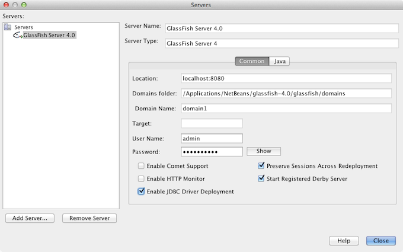
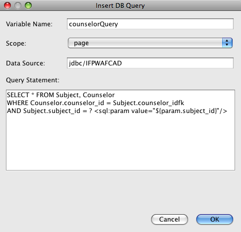
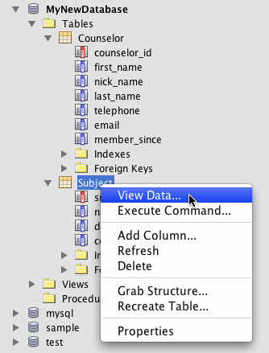

Apache NetBeans
Apache NetBeansLatest release
使用 MySQL 数据库创建简单的 Web 应用程序
| This tutorial needs a review. You can edit it in GitHub following these contribution guidelines. |
编写人：Troy Giunipero
本文档描述了如何创建用于连接 MySQL 数据库服务器的简单 Web 应用程序。其中还讲述了 Web 开发中的一些基本概念和技术，例如 JavaServer Pages (JSP)、JavaServer Pages 标准标记库 (JSTL)、Java 数据库连接 (JDBC) API 和两层的客户端/服务器体系结构。本教程是为对 Web 开发有基本了解并且期望使用 MySQL 数据库来应用其知识的初学者设计的。
MySQL 是一种常见的开源数据库管理系统，由于其速度、灵活性和可靠性而常用于 Web 应用程序中。MySQL 使用 SQL（即 Structured Query Language，结构化查询语言）访问和处理数据库中包含的数据。
本教程是连接 MySQL 数据库教程的续篇，而且假定您已创建了名为 MyNewDatabase 的 MySQL 数据库，并已在 NetBeans IDE 中为其注册了连接。该教程中使用的表数据包含在 ifpwafcad.sql 中，本教程也需要使用此数据。此 SQL 文件创建了两个表（Subject 和 Counselor），然后将样例数据填入这两个表中。如果需要，将此文件保存至您的计算机中，然后在 NetBeans IDE 中将其打开并在名为 MyNewDatabase 的 MySQL 数据库中运行该文件。

Figure 1. 此页上的内容适用于 NetBeans IDE 7.2、7.3、7.4 和 8.0
要学习本教程，您需要具备以下软件和资源。
| 软件或资源 | 要求的版本 |
|---|---|
7.2、7.3、7.4、8.0、Java EE 包 |
|
版本 7 或 8 |
|
5.x |
|
MySQL Connector/J JDBC 驱动程序 |
版本 5.x |
GlassFish Server Open Source Edition |
3.x 或 4.x |
注：
-
使用 NetBeans IDE 的 Java 下载包，可以安装 GlassFish Server。您需要 GlassFish Server 才能学完本教程。
-
Java 平台与 MySQL 数据库协议之间的通信所需的 MySQL Connector/J JDBC 驱动程序包含在 NetBeans IDE 中。
-
如果需要将项目与工作解决方案进行比较，可以下载样例应用程序。
规划结构
简单的 Web 应用程序可以使用_两层体系结构_进行设计，其中客户端可以直接与服务器通信。在本教程中，Java Web 应用程序使用 Java 数据库连接 API 直接与 MySQL 数据库通信。实际上，正是 MySQL Connector/J JDBC 驱动程序实现了应用服务器 (GlassFish Server) 识别的 Java 代码与任何 SQL（数据库服务器 (MySQL) 识别的语言）内容之间的通信。
您在本教程中构建的应用程序需要创建两个 JSP 页。在每个页面中，您将使用 HTML 和 CSS 来实现简单接口，并应用 JSTL 技术来执行直接查询数据库以及将检索到的数据插入这两个页面的逻辑。两个数据库表（Subject 和 Counselor）包含在 MySQL 数据库 MyNewDatabase（该数据库是通过学完连接 MySQL 数据库教程创建的）中。以下面的两层方案为例。
image::images/ifpwafcad-structure.png[title="两层 Web 应用程序的样例结构"]
欢迎页面 (index.jsp) 向用户展示了简单的 HTML 窗体。当浏览器请求 index.jsp 时，该页面内的 JSTL 代码会启动对 MyNewDatabase 的查询。它会从 Subject 数据库表中检索数据，然后先将该数据插入到页面中，再将页面发送至浏览器。当用户在欢迎页面的 HTML 窗体中提交其选择时，该提交会启动对响应页 (response.jsp) 的请求。同样，该页面内的 JSTL 代码会启动对 MyNewDatabase 的查询。这次，它会同时从 Subject 和 Counselor 表中检索数据，并将该数据插入到页面中，以便允许用户在页面返回到浏览器时查看基于其选择的数据。
为了实现上述方案，您将为一个假想的组织 IFPWAFCAD（即 International Former Professional Wrestlers' Association for Counseling and Development，国际前职业摔跤咨询与发展协会）开发一个简单的应用程序。
index.jsp

Figure 2. 浏览器中显示的 index.jsp
response.jsp

Figure 3. 浏览器中显示的 response.jsp
创建新项目
首先，在 IDE 中创建一个新的 Java Web 项目：
-
从主菜单中，选择 "File"（文件）> "New Project"（新建项目）（Ctrl-Shift-N 组合键；在 Mac 上为 ⌘-Shift-N 组合键）。选择 "Java Web" 类别，然后选择 "Web Application"（Web 应用程序）。单击 "Next"（下一步）。

Figure 4. 使用 IDE 的新建项目向导创建新项目
使用新建项目向导，可以在标准 IDE 项目中创建空的 Web 应用程序。标准项目使用 IDE 构建的 Ant 构建脚本来编译、部署和运行应用程序。
-
在 "Project Name"（项目名称）中，输入 IFPWAFCAD。同时，指定项目在计算机上的位置。（默认情况下，IDE 会将项目置于主目录下的
NetBeansProjects文件夹中。）单击 "Next"（下一步）。 -
在 "Server and Settings"（服务器和设置）面板中，指定 GlassFish Server 作为用于运行应用程序的服务器。
*注：*如果您安装了 Java 版本的 NetBeans IDE，则 GlassFish Server 将显示在 "Server"（服务器）下拉字段中。由于 GlassFish Server 包含在下载中，因此会在 IDE 中自动进行注册。如果要对此项目使用其他服务器，请单击位于 "Server"（服务器）下拉字段旁边的 "Add"（添加）按钮，然后在 IDE 中注册其他服务器。但是，使用 GlassFish Server 之外的服务器不在本教程的讲述范围之内。
-
在 "Java EE Version"（Java EE 版本）字段中，选择 Java EE 5。

Figure 5. 在新建 Web 应用程序向导中指定服务器设置
Java EE 6 和 Java EE 7 Web 项目不需要使用 web.xml 部署描述符，且 NetBeans 项目模板不在 Java EE 6 和 Java EE 7 项目中包含 web.xml 文件。但是，本教程介绍了如何在部署描述符中声明数据源，此操作不依赖于任何特定于 Java EE 6 或 Java EE 7 的功能，因此可以将项目版本设置为 Java EE 5。
*注：*您同样可以将项目版本设置为 Java EE 6 或 Java EE 7，然后创建 web.xml 部署描述符。（从新建文件向导中选择 "Web" 类别，然后选择 "Standard Deployment Descriptor"（标准部署描述符）。）
-
单击 "Finish"（完成）。IDE 将为整个应用程序创建一个项目模板，并在编辑器中打开一个空的 JSP 页 (
index.jsp)。index.jsp文件充当应用程序的欢迎页面。
准备 Web 界面
首先，准备欢迎页 (index.jsp) 和响应页 (response.jsp)。欢迎页实现用于捕获用户数据的 HTML 窗体。这两个页面都实现 HTML 表，从而以结构化的方式显示数据。在此部分，您也可以创建样式表，以便增强两个页面的外观。
设置欢迎页
确认在编辑器中打开 index.jsp。如果此文件尚未打开，请在 "Projects"（项目）窗口的 "IFPWAFCAD" 项目中，双击 "Web Pages"（Web 页）节点下的 index.jsp。
-
在编辑器中，将
<title>标记之间的文本更改为：IFPWAFCAD Homepage。 -
将
<h1>标记之间的文本更改为：Welcome to IFPWAFCAD, the International Former Professional Wrestlers' Association for Counseling and Development!。 -
通过从主菜单中选择 "Window"（窗口）> "Palette"（组件面板）（Ctrl-Shift-8 组合键；在 Mac 上为 ⌘-Shift-8 组合键）打开 IDE 的 "Palette"（组件面板）。将指针悬停在 "HTML" 类别中的 "Table"（表）图标上，并注意为该项显示的默认代码片段。

Figure 6. 悬停在某一项之上时组件面板显示代码片段
您可以根据自己的喜好配置 "Palette"（组件面板）- 在 "Palette"（组件面板）中单击鼠标右键并选择 "Show Big Icons"（显示大图标）和 "Hide Item Names"（隐藏项名称）可使其显示上图所示的内容。
-
将光标指针放在紧靠
<h1>标记后面的位置。（该位置即是您要实现新的 HTML 表的位置。）然后，在 "Palette"（组件面板）中双击 "Table"（表）图标。 -
在显示的 "Insert Table"（插入表格）对话框中，指定以下值，然后单击 "OK"（确定）：
-
*Rows（行）：*2
-
*Columns（列）：*1
-
*Border Size（边框大小）：*0 此时会生成 HTML 表代码并已添加到您的页面中。
-
-
将以下内容添加到表标题和第一个表行的单元格中（新内容以*粗体*显示）：
<table border="0">
<thead>
<tr>
<th>*IFPWAFCAD offers expert counseling in a wide range of fields.*</th>
</tr>
</thead>
<tbody>
<tr>
<td>*To view the contact details of an IFPWAFCAD certified former
professional wrestler in your area, select a subject below:*</td>
</tr>-
在底部的表行中，插入一个 HTML 窗体。为此，请将光标置于第二对
<td>标记之间，然后在 "Palette"（组件面板）中双击 "HTML form"（HTML 窗体）( ) 图标。在 "Insert Form"（插入窗体）对话框的 "Action"（操作）文本字段中，键入
) 图标。在 "Insert Form"（插入窗体）对话框的 "Action"（操作）文本字段中，键入 response.jsp，然后单击 "OK"（确定）。

Figure 7. 在
-
在
<form>标记之间键入以下内容（新内容以*粗体*显示）：
<tr>
<td>
<form action="response.jsp">
*<strong>Select a subject:</strong>*
</form>
</td>
</tr>-
按 Enter 键将在您刚刚添加的内容之后添加一空行，然后双击 "Palette"（组件面板）中的 "Drop-down List"（下拉列表）以打开 "Insert Drop-down"（插入下拉列表）对话框。
-
在 "Insert Drop-down"（插入下拉列表）对话框的 "Name"（名称）文本字段中键入
subject_id，然后单击 "OK"（确定）。请注意，下拉列表的代码片段会添加到窗体中。
下拉列表的选项数目当前并不重要。稍后，我们将在本教程中添加动态生成选项（基于从 Subject 数据库表收集的数据）的 JSTL 标记。
-
就在您刚刚添加的下拉列表后的位置点处添加 "submit"（提交）按钮项 ()。可以使用 "Palette"（组件面板）执行此操作，也可以调用编辑器的代码完成（如上一步中所述）。在 "Insert button"（插入按钮）对话框的 "Label"（标签）和 "Name"（名称）字段中均输入
submit，然后单击 "OK"（确定）。 -
要设置代码的格式，请在编辑器中单击鼠标右键，然后选择 "Format"（格式化代码）（Alt-Shift-F 组合键；在 Mac 上为 Ctrl-Shift-F 组合键）。系统会为您的代码自动设置格式，并且类似于以下内容：
<body>
<h2>Welcome to <strong>IFPWAFCAD</strong>, the International Former
Professional Wrestlers' Association for Counseling and Development!
</h2>
<table border="0">
<thead>
<tr>
<th>IFPWAFCAD offers expert counseling in a wide range of fields.</th>
</tr>
</thead>
<tbody>
<tr>
<td>To view the contact details of an IFPWAFCAD certified former
professional wrestler in your area, select a subject below:</td>
</tr>
<tr>
<td>
<form action="response.jsp">
<strong>Select a subject:</strong>
<select name="subject_id">
<option></option>
</select>
<input type="submit" value="submit" name="submit" />
</form>
</td>
</tr>
</tbody>
</table>
</body>要在浏览器中查看此页面，请在编辑器中单击鼠标右键，然后选择 "Run File"（运行文件）（Shift-F6 组合键；在 Mac 上为 Fn-Shift-F6 组合键）。在您执行此操作时，JSP 页面会自动进行编译并部署到您的服务器中。IDE 会打开默认浏览器以便从页面的部署位置显示该页面。

Figure 8. index.jsp 显示在浏览器中
创建响应页
为了准备 response.jsp 的界面，您必须首先在项目中创建文件。请注意，此页面中显示的大部分内容都是使用 JSP 技术自动生成的。因此，在以下步骤中添加_占位符_，稍后将替换为 JSP 代码。
-
在 "Projects"（项目）窗口中右键单击 IFPWAFCAD 项目节点，然后选择 "New"（新建）> "JSP"。“新建 JSP 文件”对话框打开。
-
在 JSP "File Name"（文件名）字段中，输入
response。请注意，当前为 "Location"（位置）字段选择了 "Web Pages"（Web 页），这表示将在项目的web目录中创建该文件。此目录同样是index.jsp欢迎页驻留的位置。 -
接受任何其他默认设置，然后单击 "Finish"（完成）。新的
response.jsp页面模板生成，并在编辑器中打开。新的 JSP 节点还会在 "Projects"（项目）窗口的 "Web Pages"（Web 页）下显示。

Figure 9. response.jsp 节点显示在
-
在编辑器中，将标题更改为：
IFPWAFCAD - {placeholder}。 -
删除
<body>标记之间的<h1>Hello World!</h1>一行，然后复制下面的 HTML 表并将其粘贴到页面主体中：
<table border="0">
<thead>
<tr>
<th colspan="2">{placeholder}</th>
</tr>
</thead>
<tbody>
<tr>
<td><strong>Description: </strong></td>
<td><span style="font-size:smaller; font-style:italic;">{placeholder}</span></td>
</tr>
<tr>
<td><strong>Counselor: </strong></td>
<td>{placeholder}
<br>
<span style="font-size:smaller; font-style:italic;">
member since: {placeholder}</span>
</td>
</tr>
<tr>
<td><strong>Contact Details: </strong></td>
<td><strong>email: </strong>
<a href="mailto:{placeholder}">{placeholder}</a>
<br><strong>phone: </strong>{placeholder}
</td>
</tr>
</tbody>
</table>要在浏览器中查看此页面，请在编辑器中单击鼠标右键，然后选择 "Run File"（运行文件）（Shift-F6 组合键；在 Mac 上为 Fn-Shift-F6 组合键）。此时编译该页面，将其部署到 GlassFish Server，并在默认浏览器中将其打开。

Figure 10. response.jsp 显示在浏览器中
创建样式表
创建简单的样式表，以便增强 Web 界面的显示。本教程假定您了解样式规则的作用方式，以及它们影响 index.jsp 和 response.jsp 中相应 HTML 元素的方式。
-
通过按 IDE 主工具栏中的 "New File"（新建文件）(
 ) 按钮打开新建文件向导。选择 "Web" 类别，然后选择 "Cascading Style Sheet"（级联样式表）并单击 "Next"（下一步）。
) 按钮打开新建文件向导。选择 "Web" 类别，然后选择 "Cascading Style Sheet"（级联样式表）并单击 "Next"（下一步）。 -
键入
style作为 CSS 文件名，并单击 "Finish"（完成）。IDE 会创建一个空 CSS 文件，并将其放置在index.jsp和response.jsp所在的同一个项目位置。请注意，style.css的节点现在显示在 "Projects"（项目）窗口的项目中，并且该文件在编辑器中打开。 -
在编辑器中，将以下内容添加到
style.css文件中：
body {
font-family: Verdana, Arial, sans-serif;
font-size: smaller;
padding: 50px;
color: #555;
}
h1 {
text-align: left;
letter-spacing: 6px;
font-size: 1.4em;
color: #be7429;
font-weight: normal;
width: 450px;
}
table {
width: 580px;
padding: 10px;
background-color: #c5e7e0;
}
th {
text-align: left;
border-bottom: 1px solid;
}
td {
padding: 10px;
}
a:link {
color: #be7429;
font-weight: normal;
text-decoration: none;
}
a:link:hover {
color: #be7429;
font-weight: normal;
text-decoration: underline;
}-
将样式表链接到
index.jsp和response.jsp。在这两个页面中，将以下行添加到<head>标记之间：
<link rel="stylesheet" type="text/css" href="style.css">要在编辑器中打开的文件之间快速导航，请按 Ctrl-Tab 组合键，然后选择所需的文件。
准备应用程序和数据库之间的通信
在服务器与数据库之间实现通信的最有效方式是设置数据库_连接池_。为每个客户端请求创建新连接会非常耗时，对于连续接收大量请求的应用程序尤其如此。为了改变这种情况，会在连接池中创建和维护大量的连接。任何需要访问应用程序数据层的传入请求将使用池中已创建的连接。同样，当请求完成时，连接不会关闭，但是会返回到连接池。
为服务器准备数据源和连接池后，您需要指示应用程序使用数据源。这通常通过在应用程序的 web.xml 部署描述符中创建一个条目来完成。最后，您需要确保服务器可以访问数据库驱动程序（MySQL Connector/J JDBC 驱动程序）。
*重要说明：*从现在起，您需要确保已设置名为 MyNewDatabase 的 MySQL 数据库实例，并且该实例包含 ifpwafcad.sql 中提供的样例数据。此 SQL 文件创建了两个表（Subject 和 Counselor），然后将样例数据填入这两个表中。如果您尚未执行此任务，或者在执行此任务时需要帮助，请参见连接 MySQL 数据库，然后再继续操作。
此外，您的数据库需要受口令保护才能在本教程中创建数据源和使用 GlassFish Server。如果您使用的是默认 MySQL root 帐户和空口令，则可以通过命令行提示符设置口令。
本教程使用 nbuser 作为示例口令。要将口令设置为 nbuser，请在命令行提示符下导航至 MySQL 安装的 bin 目录，然后输入以下内容：
shell> mysql -u root
mysql> UPDATE mysql.user SET Password = PASSWORD('_nbuser_')
-> WHERE User = 'root';
mysql> FLUSH PRIVILEGES;有关详细信息，请参见正式的 MySQL 参考手册：《Securing the Initial MySQL Accounts》（《确保初始 MySQL 帐户安全》）。
设置 JDBC 数据源和连接池
GlassFish Server Open Source Edition 包含数据库连接池 (DBCP) 库，该库为开发者提供了透明的连接池功能。要利用该功能，需要为应用程序可以用于连接池的服务器配置 JDBC（Java Database Connectivity，Java 数据库连接）数据源。
有关 JDBC 技术的详细信息，请参见 Java 教程：JDBC 基础知识。
您可以直接在 GlassFish Server 管理控制台中配置数据源，也可以按照下面所述，在 glassfish-resources.xml 文件中声明应用程序所需的资源。部署应用程序时，服务器在资源声明中读取内容，然后创建所需的资源。
下面的步骤介绍了如何声明连接池以及依赖于连接池的数据源。使用 NetBeans“JDBC 资源”向导，可以执行这两个操作。
-
通过按 IDE 主工具栏中的 "New File"（新建文件）(
) 按钮打开新建文件向导。选择 "GlassFish" 服务器类别，然后选择 "JDBC Resource"（JDBC 资源）并单击 "Next"（下一步）。 -
在步骤 2 "General Attributes"（常规属性）中，选择 "Create New JDBC Connection Pool"（创建新的 JDBC 连接池）选项，然后在 "JNDI Name"（JNDI 名称）文本字段中键入 jdbc/IFPWAFCAD。

Figure 11. 在 JDBC 资源向导中指定数据源设置
JDBC 数据源依赖于 JNDI（Java Naming and Directory Interface，Java 命名和目录接口）。JNDI API 为应用程序查找和访问数据源提供了统一的方式。有关详细信息，请参见 JNDI 教程。
-
（可选）为数据源添加描述。例如，键入：
Accesses the database that provides data for the IFPWAFCAD application。 -
单击 "Next"（下一步），然后再次单击 "Next"（下一步）以跳过步骤 3“附加属性”。
-
在步骤 4 中，键入 IfpwafcadPool 作为 JDBC 连接池名称。确保 "Extract from Existing Connection"（从现有连接中提取）选项已选中，然后从下拉列表中选择
jdbc:mysql://localhost:3306/MyNewDatabase。单击 "Next"（下一步）。

Figure 12. 在 JDBC 资源向导中指定连接池设置
*注：*该向导会检测已在 IDE 中设置的任何数据库连接。所以，此时您必须已创建 MyNewDatabase 数据库的连接。您可以通过打开 "Services"（服务）窗口（Ctrl-5；在 Mac 上为 ⌘-5）并在 "Databases"（数据库）类别下查找连接节点 ( )，验证已创建的连接。
)，验证已创建的连接。
-
在步骤 5 中，在 "Resource Type"（资源类型）下拉列表中选择
javax.sql.ConnectionPoolDataSource。
请注意 IDE 将从上一步中指定的数据库连接中提取信息，并为新连接池设置名称-值属性。

Figure 13. 默认值基于从所选数据库连接提取的信息
-
单击 "Finish"（完成）。该向导生成
glassfish-resources.xml文件，其中包含数据源和所指定的连接池的相应条目。
在 "Projects"（项目）窗口中，可以打开在 "Server Resources"（服务器资源）节点下创建的 glassfish-resources.xml 文件，请注意，在 <resources> 标记中已声明数据源和连接池包含您以前指定的值。
要确认确实在 GlassFish Server 中注册了新数据源和连接池，可以将项目部署到服务器中，然后在 IDE 的 "Services"（服务）窗口中查找这些资源：
-
在 "Projects"（项目）窗口中，右键单击 "IFPWAFCAD" 项目节点，然后选择 "Deploy"（部署）。如果尚未运行服务器，则会启动服务器；同时，会编译项目并将其部署到服务器。
-
打开 "Services"（服务）窗口（Ctrl-5 组合键；在 Mac 上为 ⌘-5 组合键），然后展开 "Servers"（服务器）> "GlassFish" > "Resources"（资源）> "JDBC" 下的 "JDBC Resources"（JDBC 资源）和 "Connection Pools"（连接池）节点。请注意，新数据源和连接池现在都已显示：

Figure 14.
从应用程序引用数据源
您需要从 Web 应用程序引用刚配置的 JDBC 资源。为此，可以在应用程序的 web.xml 部署描述符中创建一个条目。
部署描述符是基于 XML 的文本文件，它包含了描述应用程序如何部署到特定环境的信息。例如，它们通常用于指定应用程序上下文参数和行为模式、安全设置以及 Servlet、过滤器和监听程序的映射。
*注：*如果您在创建项目时指定了 Java EE 6 或 Java EE 7 作为 Java 版本，则需要通过在新建文件向导中选择 "Web" > "Standard Deployment Descriptor"（标准部署描述符），创建部署描述符文件。
请执行以下步骤，在应用程序的部署描述符中引用数据源。
-
在 "Projects"（项目）窗口中，展开 "Configuration Files"（配置文件）文件夹，然后双击
web.xml在编辑器中打开该文件。 -
单击编辑器顶部的 "References"（引用）标签。
-
展开 "Resource References"（资源引用）标题，并单击 "Add"（添加）以打开 "Add Resource Reference"（添加资源引用）对话框。
-
对于 "Resource Name"（资源名称），输入您在上面部分为服务器配置数据源时提供的资源名称 (
jdbc/IFPWAFCAD)。 -
在 "Resource Type"（资源类型）字段中键入
javax.sql.ConnectionPoolDataSource。单击 "OK"（确定）。
"Description"（描述）字段是可选的，但是您可以输入用户可读的资源描述，例如 Database for IFPWAFCAD application。

Figure 15. 在
现在，新资源会列在 "Resource References"（资源引用）标题下面。
-
要验证该资源现在是否已添加到
web.xml文件中，请单击编辑器顶部的 "Source"（源）标签。请注意，现在包含了以下 <`resource-ref`> 标记。
<resource-ref>
<description>Database for IFPWAFCAD application</description>
<res-ref-name>jdbc/IFPWAFCAD</res-ref-name>
<res-type>javax.sql.ConnectionPoolDataSource</res-type>
<res-auth>Container</res-auth>
<res-sharing-scope>Shareable</res-sharing-scope>
</resource-ref>将数据库驱动程序的 JAR 文件添加到服务器
添加数据库驱动程序的 JAR 文件是使服务器能够与您的数据库通信的另一个非常重要的步骤。通常，需要找到数据库驱动程序的安装目录，并将 mysql-connector-java-5.1.6-bin.jar 文件从驱动程序的根目录复制到您所使用的服务器的库文件夹中。幸运的是，IDE 的服务器管理能够在部署时检测是否已添加了 JAR 文件，如果未添加，它会自动添加。
要演示此过程，请打开服务器管理器（选择 "Tools"（工具）> "Servers"（服务器））。IDE 提供了一个 JDBC 驱动程序部署选项。如果启用该选项，该选项会启动检查以确定服务器的部署应用程序是否需要任何驱动程序。在 MySQL 中，如果需要驱动程序但又缺少该驱动程序，IDE 的捆绑驱动程序会部署到服务器的适当位置中。
-
选择 "Tools"（工具）> "Servers"（服务器）以打开服务器管理器。在左窗格中选择 GlassFish Server。
-
在主窗格中，选择 "Enable JDBC Driver Deployment"（启用 JDBC 驱动程序部署）选项。

Figure 16. 使用
-
在关闭服务器管理器之前，请记录 "Domains"（域）文件夹文本字段中指示的路径。在连接 IDE 中的 GlassFish Server 时，实际上是连接到应用服务器的_实例_。每个实例均会在唯一的域中运行应用程序，"Domain Name"（域名）字段指示了服务器所使用的域名。如上图所示，驱动程序 JAR 文件应该位于
domain1中，它是安装 GlassFish Server 时创建的默认域。 -
单击 "Close"（关闭）退出服务器管理器。
-
在计算机上，导航至 GlassFish Server 安装目录，并向下浏览到
domains>domain1>lib子文件夹。您应该已将 IFPWAFCAD 项目部署到服务器，因此应会看到mysql-connector-java-5.1.6-bin.jar文件。如果没有看到驱动程序 JAR 文件，请执行下列步骤。 -
将您的项目部署到服务器。在 IDE 的 "Projects"（项目）窗口中，从项目节点的右键单击菜单中选择 "Deploy"（部署）。在 IDE 的 "Output"（输出）窗口中可以查看进度（Ctrl-4 组合键；在 Mac 上为 ⌘-4 组合键）。输出会提示 MySQL 驱动程序已部署到 GlassFish Server 中的某个位置。

Figure 17.
现在，如果返回到计算机上的 domain1/lib 子文件夹，则会看到已自动添加了 mysql-connector-java-5.1.6-bin.jar 文件。
添加动态逻辑
返回到在本教程前面创建的 index.jsp 和 response.jsp 占位符，您现在可以实现 JSTL 代码，通过该代码，页面可以_动态_生成内容（即，根据用户输入）。为此，请执行以下三个任务。
将 JSTL 库添加到项目的类路径中
您可以应用 JavaServer Pages 标准标记库 (JSTL) 访问和显示从数据库提取的数据。GlassFish Server 在默认情况下包含 JSTL 库。通过在 "Projects"（项目）窗口中展开 "Libraries"（库）节点下的 "GlassFish Server" 节点并搜索 javax.servlet.jsp.jstl.jar 库，可以对此进行验证。（早期版本的 GlassFish Server 使用 jstl-impl.jar 库。）默认情况下，GlassFish Server 库会添加到项目的类路径中，因此您不必为此任务执行任何步骤。
JSTL 提供了以下四个基本功能区。
-
core：常见的结构性任务，如处理流控制的迭代和条件 -
fmt：国际化和本地化消息格式设置 -
sql：简单数据库访问 -
xml：处理 XML 内容
本教程重点介绍 core 和 sql 标记库的使用。
实现 JSTL 代码
现在，您可以实现动态检索并显示每页数据的代码。两个页面需要您实现 SQL 查询，以便利用在本教程前面所创建的数据源。
IDE 提供了几个特定于数据库的 JSTL 代码片段，您可以从 "Palette"（组件面板）（Ctrl-Shift-8 组合键；在 Mac 上为 ⌘-Shift-8 组合键）中选择它们。

Figure 18. 从组件面板中选择特定于数据库的 JSTL 代码片段
index.jsp
要在 index.jsp 中动态显示窗体的内容，您需要从 Subject 数据库表访问所有 name。
-
将鼠标悬停在 "Palette"（组件面板）中的 "DB Report"（数据库报告）项上。

Figure 19. 键入
"DB Report"（数据库报告）项使用 <sql:query> 标记创建 SQL 查询，然后使用 <c:forEach> 标记对查询的 resultset 执行循环操作并输出检索到的数据。
-
将光标置于
<%@page … %>声明（第 7 行）上方，然后双击 "Palette"（组件面板）中的 "DB Report"（数据库报告）项。在显示的对话框中，输入以下详细信息：-
Variable Name（变量名称）：
subjects -
Scope（范围）：
page -
"Data Source（数据源）：
jdbc/IFPWAFCAD -
Query Statement（查询语句）：
SELECT subject_id, name FROM Subject
-

Figure 20. 使用
-
单击 "OK"（确定）。在
index.jsp文件中生成以下内容。（新内容以*粗体*显示。）
*<%@taglib prefix="c" uri="http://java.sun.com/jsp/jstl/core"%>
<%@taglib prefix="sql" uri="http://java.sun.com/jsp/jstl/sql"%>*
<%--
Document : index
Author : nbuser
--%>
*<sql:query var="subjects" dataSource="jdbc/IFPWAFCAD">
SELECT subject_id, name FROM Subject
</sql:query>
<table border="1">
<!-- column headers -->
<tr>
<c:forEach var="columnName" items="${subjects.columnNames}">
<th><c:out value="${columnName}"/></th>
</c:forEach>
</tr>
<!-- column data -->
<c:forEach var="row" items="${subjects.rowsByIndex}">
<tr>
<c:forEach var="column" items="${row}">
<td><c:out value="${column}"/></td>
</c:forEach>
</tr>
</c:forEach>
</table>*
<%@page contentType="text/html" pageEncoding="UTF-8"%>
<!DOCTYPE HTML PUBLIC "-//W3C//DTD HTML 4.01 Transitional//EN"
"http://www.w3.org/TR/html4/loose.dtd">请注意，IDE 自动添加了生成的内容中使用的 JSTL 标记（<sql:query> 和 <c:forEach>）所需的 taglib 指令。taglib 指令声明 JSP 页使用定制（即，JSTL）标记，命名用于定义这些标记的标记库，并指定其标记前缀。
-
运行该项目以查看其在浏览器中的显示方式。在 "Projects"（项目）窗口中右键单击项目节点，然后选择 "Run"（运行）。
当您选择 "Run"（运行）时，IDE 会将项目部署到 GlassFish Server，索引页将编译为 Servlet，并在默认浏览器中打开欢迎页。通过 "DB Report"（数据库报告）项生成的代码在欢迎页面中创建以下表格。

Figure 21. 使用
正如所看到的，通过 "DB Report"（数据库报告）项，您可以快速测试数据库连接，并在浏览器中查看数据库的表数据。这对于原型制作尤其有用。
以下步骤演示了如何将生成的代码集成到您在本教程前面所创建的 HTML 下拉列表中。
-
检查生成的代码中的列数据。共使用了两个
<c:forEach>标记；其中一个标记嵌套在另一个标记内。这导致 JSP 容器（即，GlassFish Server）对所有表行执行循环，对于每行，可对其中的所有列执行循环操作。以此方式显示整个表的数据。 -
将
<c:forEach>标记集成到 HTML 窗体中，如下所示。根据数据库中记录的数据，每项的值将变为subject_id，输出文本将变为name。（所做的更改以*粗体*显示）。
<form action="response.jsp">
<strong>Select a subject:</strong>
<select name="subject_id">
*<c:forEach var="row" items="${subjects.rowsByIndex}">
<c:forEach var="column" items="${row}">*
<option *value="<c:out value="${column}"/>"*>*<c:out value="${column}"/>*</option>
*</c:forEach>
</c:forEach>*
</select>
<input type="submit" value="submit" name="submit" />
</form>将 <c:forEach> 标记集成到 HTML 窗体中的更简单替代方法如下所示。
<form action="response.jsp">
<strong>Select a subject:</strong>
<select name="subject_id">
*<c:forEach var="row" items="${subjects.rows}">*
<option *value="${row.subject_id}"*>*${row.name}*</option>
*</c:forEach>*
</select>
<input type="submit" value="submit" name="submit" />
</form>在两种情况下，<c:forEach> 标记都会对 SQL 查询中的所有 subject_id 和 name 值执行循环操作，并将每对值插入 HTML <option> 标记中。在这种方式下，窗体的下拉列表中会填入数据。
-
删除通过 "DB Report"（数据库报告）项生成的表。（删除的内容在下面以*删除线文本*显示。）
<%@taglib prefix="c" uri="http://java.sun.com/jsp/jstl/core"%>
<%@taglib prefix="sql" uri="http://java.sun.com/jsp/jstl/sql"%>
<%--
Document : index
Created on : Dec 22, 2009, 7:39:49 PM
Author : nbuser
--%>
<sql:query var="subjects" dataSource="jdbc/IFPWAFCAD">
SELECT subject_id, name FROM Subject
</sql:query>
*[.line-through]#<table border="1">
<!-- column headers -->
<tr>
<c:forEach var="columnName" items="${subjects.columnNames}">
<th><c:out value="${columnName}"/></th>
</c:forEach>
</tr>
<!-- column data -->
<c:forEach var="row" items="${subjects.rowsByIndex}">
<tr>
<c:forEach var="column" items="${row}">
<td><c:out value="${column}"/></td>
</c:forEach>
</tr>
</c:forEach>
</table>#*
<%@page contentType="text/html" pageEncoding="UTF-8"%>
<!DOCTYPE HTML PUBLIC "-//W3C//DTD HTML 4.01 Transitional//EN"
"http://www.w3.org/TR/html4/loose.dtd">-
保存更改（Ctrl-S 组合键；在 Mac 上为 ⌘-S 组合键）。
-
在浏览器中刷新项目的欢迎页。
请注意，浏览器中的下拉列表现在包含从数据库检索到的主题名称。
默认情况下，将会为项目启用 "compile-on-save"（在保存时编译），因此您无需重新部署项目。这意味着在修改和保存文件时，会自动编译并部署该文件，并且您无需重新编译整个项目。可在项目的 "Properties"（属性）窗口的 "Compiling"（编译）类别中为项目启用和禁用 "compile-on-save"（在保存时编译）。
response.jsp
响应页面提供与欢迎页面中所选主题相对应的顾问详细信息。您创建的查询必须选择符合以下条件的顾问记录：counselor_id 与所选主题记录中的 counselor_idfk 相匹配。
-
将光标置于
<%@page … %>声明（第 7 行）上方，然后双击 "Palette"（组件面板）中的 "DB Query"（数据库查询）以打开 "Insert DB Query"（插入数据库查询）对话框。 -
在 "Insert DB Query"（插入数据库查询）对话框中输入以下详细信息。
-
Variable Name（变量名称）：
counselorQuery -
Scope（范围）：
page -
"Data Source（数据源）：
jdbc/IFPWAFCAD -
Query Statement（查询语句）：
SELECT * FROM Subject, Counselor WHERE Counselor.counselor_id = Subject.counselor_idfk AND Subject.subject_id = ? <sql:param value="${param.subject_id}"/>
-

Figure 22. 使用
-
单击 "OK"（确定）。在
response.jsp文件中生成以下内容。（新内容以*粗体*显示。）
*<%@taglib prefix="sql" uri="http://java.sun.com/jsp/jstl/sql"%>*
<%--
Document : response
Created on : Dec 22, 2009, 8:52:57 PM
Author : nbuser
--%>
*<sql:query var="counselorQuery" dataSource="jdbc/IFPWAFCAD">
SELECT * FROM Subject, Counselor
WHERE Counselor.counselor_id = Subject.counselor_idfk
AND Subject.subject_id = ? <sql:param value="${param.subject_id}"/>
</sql:query>*
<%@page contentType="text/html" pageEncoding="UTF-8"%>
<!DOCTYPE HTML PUBLIC "-//W3C//DTD HTML 4.01 Transitional//EN"
"http://www.w3.org/TR/html4/loose.dtd">请注意，IDE 自动添加了 <sql:query> 标记所需的 taglib 指令。另请注意，您在查询中直接使用了 <sql:param> 标记。由于此查询依赖于从 index.jsp 提交的 subject_id 值，因此可以使用 ${param.subject_id} 格式的 EL（Expression Language，表达式语言）语句提取值，然后将其传递到 <sql:param> 标记，以便在运行时可以使用该值替换 SQL 问号 (?)。
-
使用
<c:set>标记设置与查询所返回的resultset的第一个记录（即，行）相对应的变量。（新内容以*粗体*显示。）
<sql:query var="counselorQuery" dataSource="jdbc/IFPWAFCAD">
SELECT * FROM Subject, Counselor
WHERE Counselor.counselor_id = Subject.counselor_idfk
AND Subject.subject_id = ? <sql:param value="${param.subject_id}"/>
</sql:query>
*<c:set var="counselorDetails" value="${counselorQuery.rows[0]}"/>*尽管查询所返回的 resultset 应仅包含一个记录，但此步骤非常有必要，因为页面需要使用 EL（Expression Language，表达式语言）语句访问记录中的值。回想一下，在 index.jsp 中，您使用 <c:forEach> 标记即可轻松访问 resultset 中的值。但是，<c:forEach> 标记的操作方式是通过为查询中包含的行设置变量，从而使您可以通过在 EL 语句中包含行变量来提取值。
-
将 JSTL
core库的taglib指令添加到文件顶部，以便可以识别<c:set>标记。（新内容以*粗体*显示。）
*<%@taglib prefix="c" uri="http://java.sun.com/jsp/jstl/core"%>*
<%@taglib prefix="sql" uri="http://java.sun.com/jsp/jstl/sql"%>-
在 HTML 标记中，将所有占位符替换为 EL 语句代码，该代码显示
counselorDetails变量中保存的数据。（所做的更改在下面以*粗体*显示）：
<html>
<head>
<meta http-equiv="Content-Type" content="text/html; charset=UTF-8"/>
<link rel="stylesheet" type="text/css" href="style.css">
<title>*${counselorDetails.name}*</title>
</head>
<body>
<table>
<tr>
<th colspan="2">*${counselorDetails.name}*</th>
</tr>
<tr>
<td><strong>Description: </strong></td>
<td><span style="font-size:smaller; font-style:italic;">*${counselorDetails.description}*</span></td>
</tr>
<tr>
<td><strong>Counselor: </strong></td>
<td><strong>*${counselorDetails.first_name} ${counselorDetails.nick_name} ${counselorDetails.last_name}*</strong>
<br><span style="font-size:smaller; font-style:italic;">
<em>member since: *${counselorDetails.member_since}*</em></span></td>
</tr>
<tr>
<td><strong>Contact Details: </strong></td>
<td><strong>email: </strong>
<a href="mailto:*${counselorDetails.email}*">*${counselorDetails.email}*</a>
<br><strong>phone: </strong>*${counselorDetails.telephone}*</td>
</tr>
</table>
</body>
</html>运行完成的应用程序
现在，您已完成该应用程序。可以尝试再次运行它以查看其在浏览器中的显示方式。请注意，由于 NetBeans 具备“在保存时编译”功能，因此您无需担心编译或重新部署应用程序的问题。运行项目时，您可以确保部署包含您的最新更改。
单击主工具栏中的 "Run Project"（运行项目）( ) 按钮。在 IDE 的默认浏览器中打开
) 按钮。在 IDE 的默认浏览器中打开 index.jsp 页。
当 index.jsp 显示在浏览器中时，从下拉列表中选择一个主题，然后单击 submit。应会立即转至 response.jsp 页，其中显示了与您的选择相对应的详细信息。

Figure 23. 浏览器中显示的 response.jsp，其中显示从数据库检索的数据
“使用 MySQL 数据库创建简单的 Web 应用程序”教程到此结束。本文档说明了如何创建用于连接 MySQL 数据库的简单 Web 应用程序。此外，还演示了如何使用基本的两层体系结构构建应用程序，并且使用了 JSP、JSTL、JDBC 和 JNDI 等大量技术作为动态访问和显示数据的方法。
疑难解答
教程应用程序出现的大多数问题是由于 GlassFish Server Open Source Edition 与 MySQL 数据库服务器之间的通信发生问题。如果您的应用程序未正确显示，或者如果您收到服务器错误，则执行以下检查会非常有用。
数据库资源是否存在？
使用 IDE 的 "Services"（服务）窗口（Ctrl-5 组合键；在 Mac 上为 ⌘-5 组合键）确保 MySQL 服务器正在运行，并且 MyNewDatabase 可以访问且包含相应的表数据。
-
要连接到 MySQL 数据库服务器，请右键单击 MySQL 服务器节点并选择 "Connect"（连接）。
-
如果
MyNewDatabase的连接节点 () 未显示在 "Services"（服务）窗口中，您可以通过右键单击 MySQL 驱动程序节点 ( ) 并选择 "Connect Using"（连接设置），来创建连接。在显示的对话框中输入所需的详细信息。
) 并选择 "Connect Using"（连接设置），来创建连接。在显示的对话框中输入所需的详细信息。

Figure 24. 在 IDE 中使用
"New Database Connection"（新建数据库连接）对话框中提供的字段是对 "Show JDBC URL"（显示 JDBC URL）选项中输入的 URL 字符串的镜像。因此，如果您知道该 URL（例如 jdbc:mysql://localhost:3306/MyNewDatabase），则可以将其粘贴到 "Show JDBC URL"（显示 JDBC URL）字段中，随之将会自动填充其余对话框字段。
* 要确保 Subject 和 Counselor 表存在且它们包含样例数据，请展开 MyNewDatabase 连接节点 () 并找到 MyNewDatabase 目录节点 ()。展开该目录节点以查看现有表。可以通过右键单击表节点并选择 "View Data"（查看数据）来查看表数据。

Figure 25. 通过从数据库表节点的右键单击菜单中选择
服务器上是否存在连接池和数据源？
将应用程序部署到 GlassFish Server 后，项目中包含的 glassfish-resources.xml 应指示服务器创建 JDBC 资源和连接池。您可以从 "Services"（服务）窗口中的 "Servers"（服务器）节点确定 JDBC 资源和连接池是否存在。
-
展开 "Servers"（服务器）> "GlassFish" > "Resources"（资源）节点。展开 "JDBC Resources"（JDBC 资源）以查看从
glassfish-resources.xml创建的jdbc/IFPWAFCAD数据源。展开 "Connection Pools"（连接池）节点以查看从glassfish-resources.xml创建的IfpwafcadPool连接池。（这在上面部分进行了演示。）
GlassFish Server 是否可以访问 MySQL Connector/J 驱动程序？
确保已将 MySQL Connector/J 驱动程序部署到 GlassFish Server。（这在将数据库驱动程序的 JAR 文件添加到服务器中进行了讨论。）
-
找到您计算机上的 GlassFish Server 安装文件夹，然后向下浏览到
GlassFish domains/domain1/lib子文件夹。您在此处应该可以找到mysql-connector-java-5.1.6-bin.jar文件。
数据库是否受口令保护？
数据库需要受口令保护才能在本教程中使 GlassFish Server 数据源正常工作。如果您使用的是默认 MySQL root 帐户和空口令，则可以通过命令行提示符设置口令。
-
要将口令设置为
nbuser，请在命令行提示符下导航至 MySQL 安装的bin目录，然后输入以下内容：
shell> mysql -u root
mysql> UPDATE mysql.user SET Password = PASSWORD('_nbuser_')
-> WHERE User = 'root';
mysql> FLUSH PRIVILEGES;有关详细信息，请参见正式的 MySQL 参考手册：《Securing the Initial MySQL Accounts》（《确保初始 MySQL 帐户安全》）。
连接池属性是否设置正确？
确保服务器的连接池工作正常。
-
打开 "Services"（服务）窗口（Ctrl-5 组合键；在 Mac 上为 ⌘-5 组合键），然后展开 "Servers"（服务器）节点。
-
右键单击 GlassFish Server 节点，然后选择 "View Admin Console"（查看管理控制台）。
-
根据提示输入用户名和口令。可以在服务器管理器中查看用户名和口令。
-
在控制台左侧的树中，展开 "Resources"（资源）> "JDBC" > "JDBC Connection Pools"（JDBC 连接池）>
IfpwafcadPool节点。IfpwafcadPool连接池的详细信息将显示在主窗口中。 -
单击 "Ping" 按钮。如果连接池设置正确，将看到 “Ping Succeeded” 消息。

Figure 26. 通过在 GlassFish Server 管理控制台中单击
-
如果 ping 失败，请单击 "Additional Properties"（附加属性）标签，并确保所列的属性值设置正确。
另请参见
有关 Java Web 开发的更多信息，请参见以下资源。
-
NetBeans 文章和教程
-
在 NetBeans IDE 中连接 MySQL 数据库。介绍了在 IDE 中使用 MySQL 数据库的基础知识。
-
JavaServer Faces 2.x 简介。描述如何在 Java Web 项目中使用 JSF 框架的基础教程。
-
Spring 框架简介。描述如何使用 Spring Framework 创建 MVC Web 应用程序的基础教程。
-
Java 数据库连接 (JDBC)
-
JavaServer Pages 标准标记库 (JSTL)
-
JavaServer Pages 标准标记库（正式产品页）
-
Java 命名和目录接口 (JNDI)